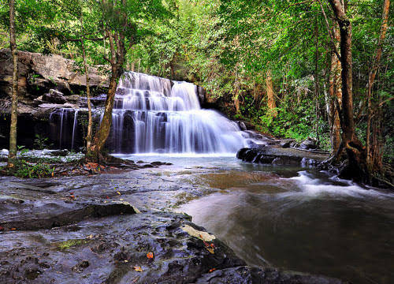
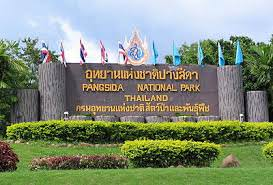

ความเป็นมา
อุทยานแห่งชาติปางสีดาเป็นแหล่งท่องเที่ยว ทางธรรมชาติที่สำคัญของจังหวัดสระแก้ว มีสภาพพื้นที่ส่วนใหญ่เป็นเทือกเขาสูงสลับซับซ้อน และมีผืนป่าที่อุดมสมบูรณ์
พื้นที่ภายในอุทยานประกอบด้วยป่าหลายประเภท เช่น ป่าดิบชื้น ป่าดิบแล้ง ป่าดิบเขา ป่าเบญจพรรณ และป่าเต็งรัง ทำให้มีความหลากหลายทางชีวภาพสูง
ปางสีดายังเป็นส่วนหนึ่งของผืนป่าดงพญาเย็น–เขาใหญ่ ซึ่งได้รับการขึ้นทะเบียนเป็นมรดกโลกทางธรรมชาติ และมีความสำคัญต่อการอนุรักษ์ทรัพยากรธรรมชาติ และสัตว์ป่า
ที่ตั้งและลักษณะพื้นที่
จังหวัด
สระแก้ว
ประเภท
อุทยานแห่งชาติ
ลักษณะพื้นที่
เทือกเขาและผืนป่าธรรมชาติ
จุดเด่น
น้ำตก ผีเสื้อ สัตว์ป่า และธรรมชาติ
ความหลากหลายของผืนป่า
ภายในอุทยานแห่งชาติปางสีดามีระบบนิเวศ ที่หลากหลาย เนื่องจากมีทั้งพื้นที่ป่าดิบชื้น ป่าดิบแล้ง ป่าดิบเขา ป่าเบญจพรรณ และป่าเต็งรัง
ความหลากหลายของสภาพป่า ทำให้บริเวณปางสีดาเป็นแหล่งอาศัย ของพืช สัตว์ป่า และนกจำนวนมาก จึงมีความสำคัญทั้งด้านการอนุรักษ์ และการศึกษาธรรมชาติ
น้ำตกปางสีดา
น้ำตกปางสีดาเป็นหนึ่งในสถานที่ท่องเที่ยว ที่สำคัญภายในอุทยาน โดยสายน้ำไหลตกจากหน้าผาสูงประมาณ 8 เมตร และมีธรรมชาติรอบบริเวณที่สวยงาม
น้ำตกมีความสวยงามมากขึ้นในช่วงฤดูฝน ซึ่งเป็นช่วงที่มีปริมาณน้ำมาก นักท่องเที่ยวสามารถเดินทางมาชมธรรมชาติ และพักผ่อนบริเวณน้ำตกได้
น้ำตกผาตะเคียน
น้ำตกผาตะเคียนเป็นอีกหนึ่งแหล่งท่องเที่ยว ภายในอุทยานแห่งชาติปางสีดา ตั้งอยู่ห่างจากน้ำตกปางสีดาประมาณ 2.5 กิโลเมตร
บริเวณน้ำตกมีหน้าผาสูงประมาณ 20 เมตร ในช่วงฤดูฝนจะมีสายน้ำไหลลดหลั่นลงมาตามชั้นหิน ทำให้เกิดทัศนียภาพที่สวยงาม
ผีเสื้อปางสีดา
ปางสีดาเป็นสถานที่ที่มีชื่อเสียง เรื่องความหลากหลายของผีเสื้อ โดยพบผีเสื้อหลายร้อยชนิดในพื้นที่ ทำให้กลายเป็นจุดหมายสำคัญ สำหรับผู้ที่สนใจธรรมชาติและการถ่ายภาพ
ช่วงที่เหมาะสำหรับการชมผีเสื้อ โดยทั่วไปอยู่ในช่วงต้นเดือนมิถุนายน ถึงเดือนกรกฎาคม ซึ่งเป็นช่วงที่สามารถพบผีเสื้อได้จำนวนมาก
นักท่องเที่ยวสามารถเดินตามเส้นทาง ชมผีเสื้อและศึกษาธรรมชาติ พร้อมเรียนรู้เกี่ยวกับชนิดและพฤติกรรม ของผีเสื้อในพื้นที่
สัตว์ป่าและนก
ด้วยสภาพป่าที่มีความอุดมสมบูรณ์ ปางสีดาจึงเป็นแหล่งอาศัยของสัตว์ป่า และนกจำนวนมาก
- มีนกมากกว่า 300 ชนิด
- เป็นแหล่งอาศัยของสัตว์ป่าหลายชนิด
- มีพื้นที่เหมาะสำหรับการศึกษาธรรมชาติ
- เป็นแหล่งเรียนรู้ด้านระบบนิเวศและความหลากหลายทางชีวภาพ
ทุ่งหญ้าบุตาปอด
ทุ่งหญ้าบุตาปอดเป็นพื้นที่ธรรมชาติ ที่มีสัตว์ป่าจำนวนมากเข้ามาอาศัยหากิน จึงเป็นพื้นที่ที่เหมาะสำหรับการศึกษา พฤติกรรมของสัตว์ป่า
บริเวณทุ่งหญ้ายังช่วยเปิดมุมมอง ให้ผู้ที่เดินทางเข้ามาสามารถสังเกต ธรรมชาติและระบบนิเวศของพื้นที่ได้ แตกต่างจากบริเวณที่เป็นผืนป่าทึบ
จุดชมวิว
ภายในอุทยานมีจุดชมวิวที่สามารถมองเห็น ภูมิประเทศและหุบเขาโดยรอบ เป็นพื้นที่ที่เหมาะสำหรับชมทิวทัศน์ และพระอาทิตย์ขึ้นหรือตก
จุดชมวิวจึงเป็นอีกหนึ่งกิจกรรม ที่นักท่องเที่ยวสามารถเลือกทำได้ นอกเหนือจากการชมน้ำตก และการเดินศึกษาธรรมชาติ
กิจกรรมท่องเที่ยว
- เดินศึกษาธรรมชาติ
- ชมน้ำตก
- ชมผีเสื้อ
- ถ่ายภาพธรรมชาติ
- ศึกษาพันธุ์พืชและสัตว์ป่า
- ชมทิวทัศน์จากจุดชมวิว
- เรียนรู้ระบบนิเวศของผืนป่า
เทศกาลดูผีเสื้อปางสีดา
ปางสีดามีการจัดเทศกาลดูผีเสื้อ ในช่วงประมาณต้นเดือนมิถุนายนถึงเดือนกรกฎาคม เพื่อส่งเสริมการท่องเที่ยวเชิงธรรมชาติ และสร้างความรู้เกี่ยวกับผีเสื้อ
ภายในกิจกรรมมีทั้งการชมผีเสื้อ การถ่ายภาพ การเรียนรู้เกี่ยวกับสายพันธุ์ และกิจกรรมที่เกี่ยวข้องกับการอนุรักษ์ธรรมชาติ
ความสำคัญต่อจังหวัดสระแก้ว
อุทยานแห่งชาติปางสีดาเป็นหนึ่งในแหล่งท่องเที่ยว ทางธรรมชาติที่สำคัญของจังหวัดสระแก้ว และช่วยสร้างภาพลักษณ์ให้จังหวัด ในด้านการท่องเที่ยวเชิงธรรมชาติ
นอกจากด้านการท่องเที่ยวแล้ว ปางสีดายังมีความสำคัญต่อการอนุรักษ์ ผืนป่า สัตว์ป่า และความหลากหลายทางชีวภาพ รวมถึงเป็นแหล่งเรียนรู้ธรรมชาติ สำหรับนักเรียน นักศึกษา และประชาชน
ทำไมถึงน่าสนใจ?
ปางสีดามีความโดดเด่นจากความอุดมสมบูรณ์ ของผืนป่าและความหลากหลายของสิ่งมีชีวิต ทำให้นักท่องเที่ยวสามารถทำกิจกรรม ได้หลากหลายรูปแบบ
ไม่ว่าจะเป็นการชมน้ำตก เดินศึกษาธรรมชาติ ชมผีเสื้อ ดูสัตว์ป่า หรือชมทิวทัศน์ ล้วนช่วยให้ผู้มาเยือนได้สัมผัส ธรรมชาติของจังหวัดสระแก้วอย่างใกล้ชิด
ข้อมูลสรุป
ชื่อสถานที่
อุทยานแห่งชาติปางสีดา
ประเภท
อุทยานแห่งชาติ
จังหวัด
สระแก้ว
จุดเด่น
น้ำตก ผีเสื้อ สัตว์ป่า และผืนป่า